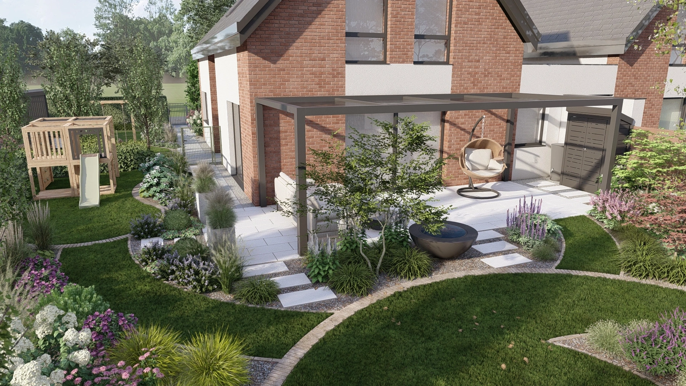
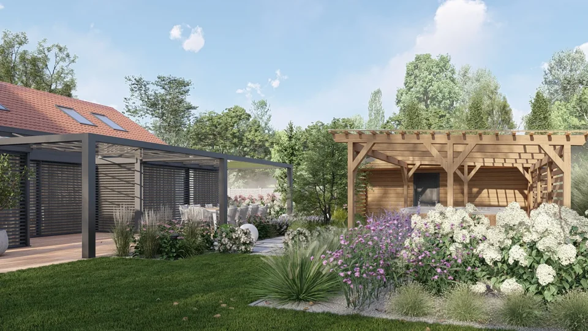
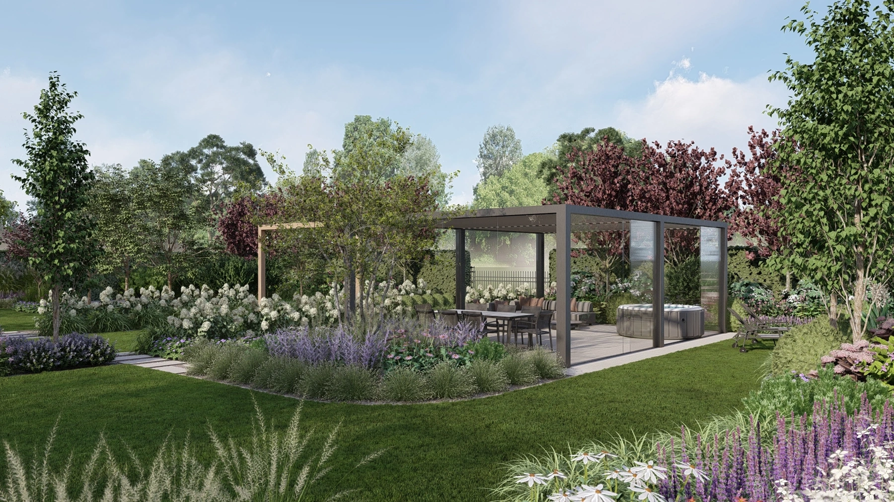
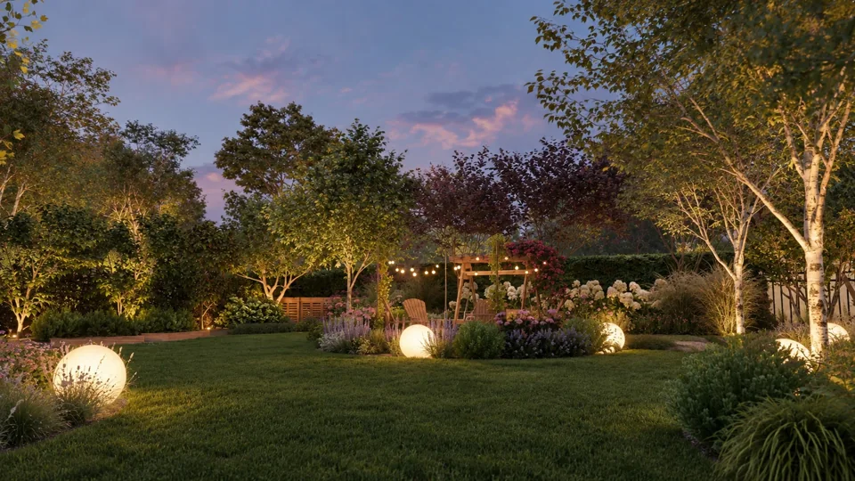
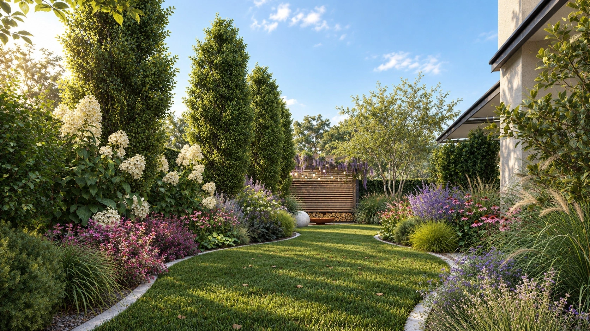
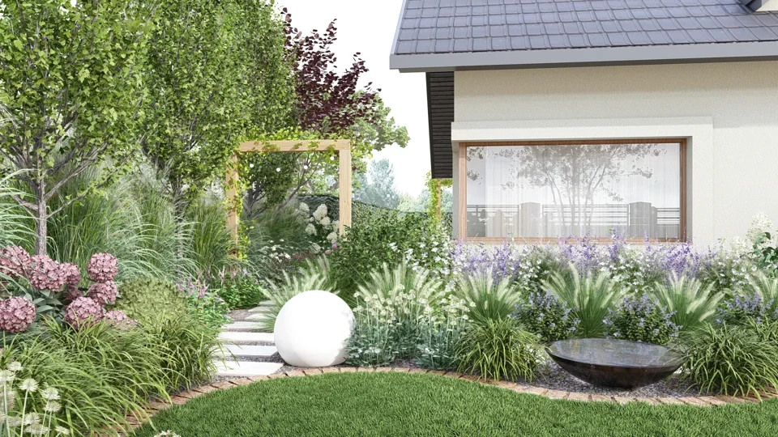
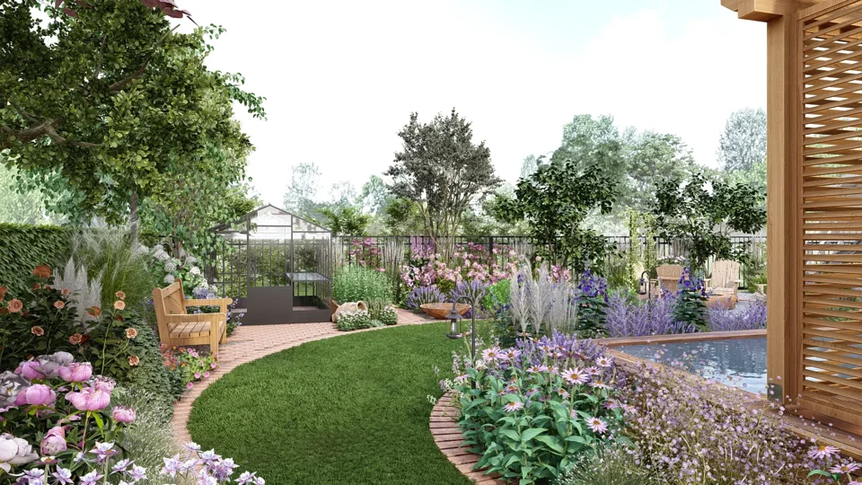
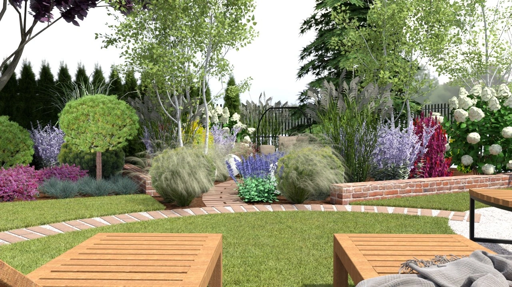
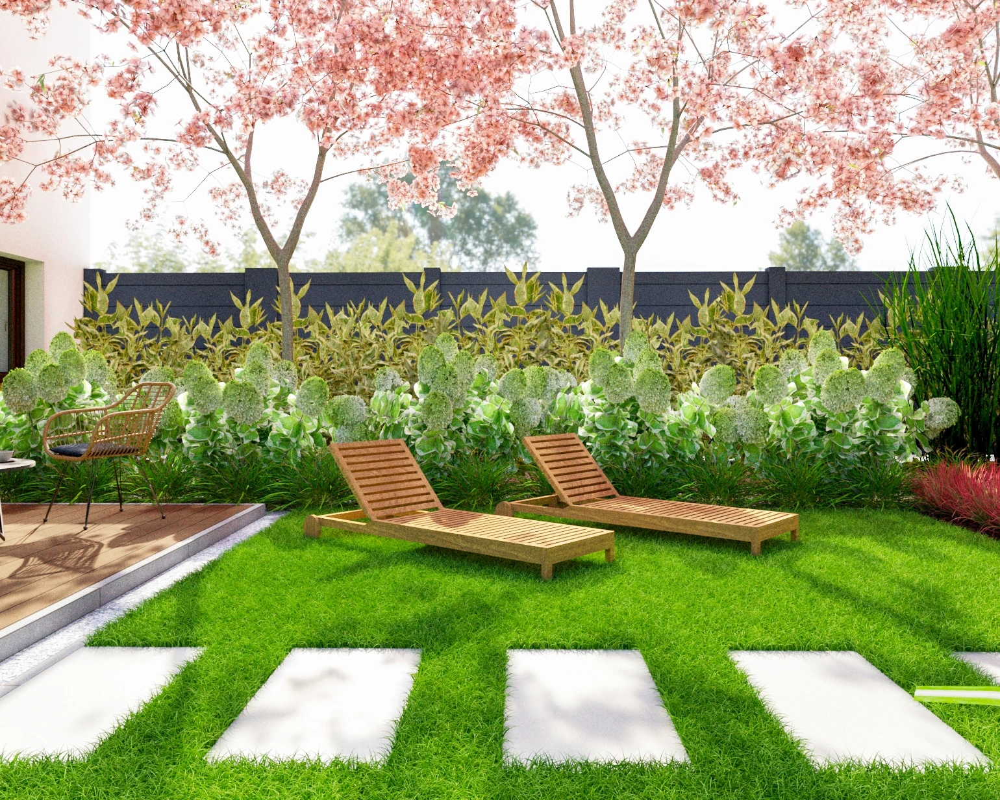
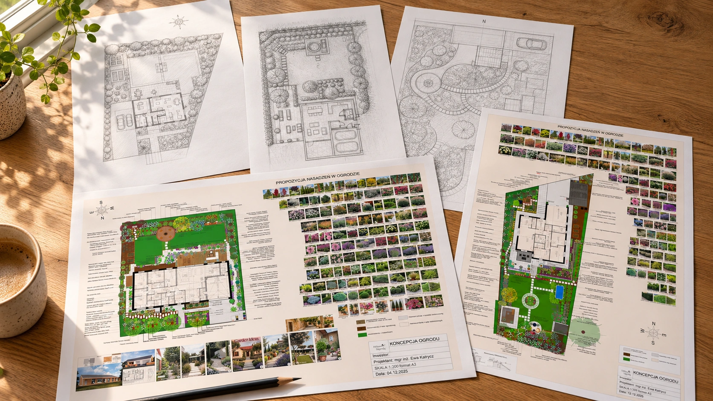

Projekty.
PROJEKTY OGRODÓW
Każdy ogród ma
swój charakter.

Ogród leśny z nutą romantyzmu
leśny, naturalistyczny z elementami romantycznego ogrodu bylinowego
Stanięcice · Powierzchnia działki 1200 m²
Malowniczy ogród z leśną nutą
naturalistyczny, lekko leśny z nowoczesnymi akcentami
Wrocław · Powierzchnia działki 580 m²
Nowoczesny ogród rodzinny
nowoczesny z elementami naturalistycznymi
Wrocław · Powierzchnia 1000 m²
Rozległy ogród w romantycznym stylu
angielski, naturalistyczny z nutą wiejskiego romantyzmu
Szyszki Włościańskie · Powierzchnia ogrodu 3100 m²
Podmiejski ogród z leśnym charakterem
naturalistyczny, lekko leśny z nowoczesnymi akcentami
Kębłowice · Powierzchnia działki 1100 m²
Mały ogród z angielską nutą
nowoczesny z elementami angielskiego ogrodu bylinowego, akcentami japońskimi i śródziemnomorskimi
Selzach · Powierzchnia ogrodu 200 m²
Romantyczny ogród w angielskim stylu
angielski, naturalistyczny z romantycznymi akcentami
Jaworzno · Powierzchnia ogrodu 550 m²
Ogród naturalistyczny z nutą śródziemnomorską
naturalistyczny, śródziemnomorski z nutą wiejskiego romantyzmu
Dobczyn · Powierzchnia działki 800 m²
Ogród w angielskim stylu
angielski, klasyczny z naturalistycznymi nasadzeniami
Teklinów · Powierzchnia 800 m²
Mały ogród z balią
nowoczesny z elementami orientalnymi
Oława · Powierzchnia 150 m²
Realizacje
Z projektu do prawdziwego ogrodu
Zdjęcia wykonanych ogrodów
TWÓJ OGRÓD, TWOJA CODZIENNOŚĆ
Teraz porozmawiajmy
o Twoim ogrodzie.
Napisz, gdzie znajduje się działka, jaką ma powierzchnię i czego potrzebujesz. Od tego zaczniemy.
Zapytaj o projekt ogrodu